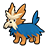

Access to:
South: Route 20
Places of interest:
The ranch owner's wife will heal the player's Pokémon when spoken to.
Utility:
Surf is required to access the Hidden Grotto. Wild Pokémon can also be encountered here with Surf.
Funfest Missions:
Forest map with 20 spots.
Funfest Trainers here are 1 level lower in Easy Mode and 1 higher in Challenge Mode.
When a Hidden Grotto's contents regenerate, there is a 20% chance that it will contain a Pokémon. The following Pokémon may be encountered. All of them have their Hidden Ability.
| Pokémon | Rate | Levels | |
|---|---|---|---|
| Marill | 15% | lv. 10-15 | |
|
 |
Herdier | 4% | lv. 10-15 |
| Dunsparce | 1% | lv. 10-15 | |
| Item | Location | Notes |
|---|---|---|
| Potion | Obtained from the ranch owner's wife | Only after battling Hugh. |
| Potion | In the eastern area of the forest | |
| Parlyz Heal | Obtained from Hugh in the northwestern area | |
| X Attack | In the southern area of the forest | |
| TM21 Frustration | Obtained from a Team Plasma Grunt in the dead end in the forest |
When a Hidden Grotto's contents regenerate, there is an 80% chance for an item to be spawned: 40% for visible items and 40% for hidden items. The following items may be generated.
| Item | Rate |
|---|---|
| Poké Ball | 12.5% |
| Potion | 6.25% |
| Repel | 6.25% |
| Great Ball | 5% |
| Super Potion | 2.5% |
| Super Repel | 2.5% |
| Ultra Ball | 2% |
| Hyper Potion | 1% |
| Max Repel | 1% |
| Fire Stone | 0.25% |
| Water Stone | 0.25% |
| Thunderstone | 0.25% |
| Leaf Stone | 0.25% |
| Item | Rate |
|---|---|
| TinyMushroom | 7.5% |
| Damp Mulch | 6.25% |
| Growth Mulch | 6.25% |
| Stable Mulch | 6.25% |
| Gooey Mulch | 6.25% |
| Big Mushroom | 2.5% |
| Red Shard | 1% |
| Green Shard | 1% |
| Yellow Shard | 1% |
| Blue Shard | 1% |
| PP Up | 0.5% |
| Rare Candy | 0.25% |
| PP Max | 0.25% |
| Trainer | Party | Notes |
|---|---|---|
| Hugh | Starter (1st stage) lv. 7 (Easy Mode) / 8 (Normal Mode) / 9 (Challenge Mode) | He uses the starter whose type is strong against the player's starter. |
| Lass Molly | Purrloin lv. 5 (Easy Mode) / 6 (Normal Mode) / 7 (Challenge Mode) Sewaddle lv. 5 (Easy Mode) / 6 (Normal Mode) / 7 (Challenge Mode) |
|
| Janitor Orville | Lillipup lv. 5 (Easy Mode) / 6 (Normal Mode) / 7 (Challenge Mode) Mareep lv. 5 (Easy Mode) / 6 (Normal Mode) / 7 (Challenge Mode) |
|
| Youngster Kenny | Patrat lv. 5 (Easy Mode) / 6 (Normal Mode) / 7 (Challenge Mode) Psyduck lv. 5 (Easy Mode) / 6 (Normal Mode) / 7 (Challenge Mode) |